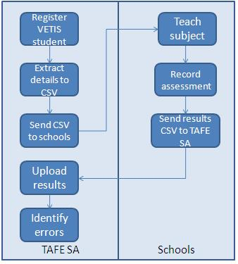

Overview
The Vocational Education and Training in Schools Use (VETiS) provides information on procedures for using the Banner® Vocational Education and Training in Schools (VETiS) results management process to extract registered student data and to upload the corresponding results.
- Enrol and register students
- Provide the registered student data to schools that run the VETiS programs with key identifying information about each student such as IDs and Subject Codes.
- Deliver and assess training
- Enter results against Subject Codes
- Submit results to the authorising TAFE, periodically, to update the TAFE student system.
VETiS Academic History
VETiS 8.0 provides a reliable base of information to schools about registered students and the subjects. This information ensures that the results returned from the schools can be readily understood and loaded back into Banner.
VETiS 8.0 provides the following means to schools.
- Producing CSV extracts of VETiS students for distribution to schools
- Uploading results from the extracted CSV files, after the schools complete the assessments
The VETiS extract process provides the following features.
- A convenient way of identifying VETiS students and group the students according to schools for distribution
- A stable and a known file format for uploading results back into Banner
- Ensure that schools have all necessary information to make the results upload as error-free as possible.
The following is a typical process flow of the VETiS Academic History.

Functions and features
VETiS is made up of various steps and processes. These are organised as follows.
- Set up VETiS 8.0: Procedures and pages are used to define elements, values, and processes that are required to produce the VETiS extracts.
- Extract, Import, and Upload the VETiS Student Data: Importing and processing file procedures are used to take data from the VETiS Results File. This step includes placing data into Banner Mass Data Update Utility (MDUU) tables, updating baseline registration tables, and producing reports on any errors encountered in the process.
- View Data: The MDUU Universal Viewer is used to view the data produced by the import and extract processes.Note: Configuring the VETiS module requires knowledge of the underlying database tables and is usually carried out with the assistance of technical staff within your institution or Professional Services.
Processing data collection
The VETiS module uses rule sets in the MDUU to extract VETiS student information and upload corresponding results.
To understand how the VETiS files are built, you must understand the process, task, and activity elements of MDUU. Refer to the Banner Mass Data Update Utility Use for a complete explanation of tasks and activities, and how these elements work to support VETiS requirements.
- Process: This represents a set of tasks sharing a common business area. The MDUU security allows you to associate users and user classes to a given process. If this functionality is activated, only users assigned to a given process will be able to execute this process
- Task: This is a set of activities that is carried out as part of a process, such as taking a snapshot of data from the original data sources and gathering them in more synthetic (eventually generated) tables.
- Activity: This is a processing element that is carried out as part of a task, such as a data copy, or a data transformation. An activity updates a single table and can be reused in several tasks.
Snapshot processing
The snapshot process populates the student results data from baseline tables. The process allows selected target tables in the snapshot data structure to be populated. It can refresh (remove and insert) or update (add new rows and update existing rows) the snapshot.
The structure of the snapshot tables is maintained by the MDUU under a schema called MDUUREP. (Refer to the Banner Mass Data Update Utility Use for more information).
When running the snapshot, you can select which snapshot tables to populate. You can also purge the selected snapshot tables before re-inserting rows.
- Create snapshot data
- Define the column mappings for the snapshot
- Define the rules to generate the snapshot population
- Initialise the snapshot
- Populate the snapshot
- Increment the snapshot (add or remove records without refreshing the snapshot from scratch).
Extract processing
After the initial student results data snapshot activity has taken place, it is transformed and organised to produce a student extract file, which is saved in the CSV format.
The extract process populates the extract based on snapshot data and, where necessary, it transforms the snapshot data into the format needed for the extract. The process allows selected target tables in the extract data structure to be populated. It can refresh (remove and insert) or update (add new rows and update existing rows) the extract.
- Create extract data
- Define the column mappings for the extract
- Define the rules to generate the extract population
- Use expressions, functions or both to derive values based on the contents of the snapshot
- Initialise the extract
- Populate the extract
- Increment the extract (add or remove records without refreshing the cohort from scratch).
File details
VETiS uses the imported file processing activity, where files of student results are processed and uploaded. The following tasks are carried out during this process.
- Import files and extract data from them
- Define the mappings for the imported data columns
- Define the rules to generate the import population
- Initialise the import
- Populate the import
- Increment the import
- View the import
- Update baseline and ASC tables with the imported data.
VETiS Data
The following table describes the activities for the VETiS VETiS Data file.
| Activity Type | Activity Name | Description |
|---|---|---|
| Snapshot VETiS VETiS Data |
|
This activity pulls data from various VETiS request tables to populate the VETIS Student Data Snapshot (SKRSVIS) table. The activity uses the student ID, PIDM and CRN as the populate keys. |
| Extract VETiS VETiS Data |
|
This activity pulls data from the VETIS Student Data Snapshot (SKRSVIS) table to populate the VETIS Student Data Extract (SKREVIS) table. The activity uses PIDM and CRN as populate keys. |
| Upload VETiS Results |
|
This activity pulls data from the VETIS Grade Data (SKRIVIS) table and the Student Course Registration Repeating (SFRSTCR) table to populate the Student Course Registration Repeating (SFRSTCR) table. The activity uses the PIDM, CRN, and effective term as populate keys. |
| Identify VETiS Result Errors |
|
This activity pulls data from the VETIS Grade Data (SKRIVIS) table to populate the VETIS Results Error (SKRERVS) table. The activity uses the student ID and subject code as populate keys. |
Result File data import
The VETiS Results File matches the extract file format and provides information about the student's grade in each subject, in addition to the date on which the grade was awarded.
The Results File format is defined by the CSV file which contains the student data. In addition to this, the Results File format is specified when the CSV file is registered as an external table in the External File Registration (GKAPEXS) page. The following appropriate format for the file must be entered in the Fields field:
SKRIVIS_PIDM(8),SKRIVIS_CRN(5),SKRIVIS_RESULT(6),SKRIVIS_RESULT_DATE(11),SKRIVIS_SUBJ_CODE(9),SKRIVIS_STUDENT_ID(9),SKRIVIS_SITE_CODE(3),SKRIVIS_SURNAME(60),SKRIVIS_FIRST_NAME(60),SKRIVIS_BIRTH_DATE(11),SKRIVIS_PROGRAM(12),SKRIVIS_YEAR(4),SKRIVIS_CAMPUS(3),SKRIVIS_FUND_CODE(5),SKRIVIS_COST_CENTRE(6),SKRIVIS_ACTIVITY_CODE(6).
After the file is imported, the ASC_VETIS_RESULTS_UP activity an activity is run to extract results from the external tables and update baseline registration. The extract results runs the conventional grade roll process, ensuring to create the appropriate academic history. An ASC_VETIS_RESULTS_ERR activity is run to identify results from the CSV file that were not uploaded. These results are identified with error messages, which list the reasons of why the activity failed to load the academic history data.
Prerequisites
Banner VETiS 8.0 works with or depends on the following releases.
- Banner General 8.0 or later
- Banner VETiS 8.0 or later
- MDUU 8.0 or later
- DEEWR 8.0 or later (optional)
- AVETMISS 8.0 or later (optional).
Procedures
This chapter explains the procedures.
Import VETiS Results File
Use this procedure to import the Results File generated by VETiS.
Procedure
Process imported files
Discusses the process imported files.
ASC_VETIS_RESULTS_UP
The ASC_VETIS_RESULTS_UP activity extract records from the external table registered on MDUU to store the incoming results data and update the corresponding records in the Student Course Registration (SFRSTCR) table.
About this task
Procedure
ASC_VETIS_RESULTS_ERR
The ASC_VETIS_RESULTS_ERR activity examines the records on the results upload table and attempt to determine whether the results on the upload table have failed to update the registration records in the Student Course Registration (SFRSTCR) table.
About this task
Procedure
Process VETiS data
The processed Results File data is updated to student records on the basis of VETiS results. You can control the execution of each process to run specific activities or tasks separately, or to run all tasks and activities immediately after producing the Request File.
However, we recommend you run each task separately, evaluating the data each time. This results in better processing time and allows you to do any data cleaning. In the case of processing incoming data processing from the response or rejection files, run the import activity before any other activity.
Refer to the Banner Mass Data Update Utility Use for more information about the pages used in configuring and executing each activity.
The “ASC_VETIS_PROCESSING process is used to produce “ASC_VETIS_PROCESSING Results File. This process contains snapshot and extract activities.
ASC_VETIS_PROCESSING
Use this procedure to generate the ASC_VETIS_PROCESSING data.
Procedure
Extract VETiS data
The snapshot and extract processing procedures help obtain student information for each file.
About this task
- Run the snapshot activity
- Run the data extract activity
As a result of this process, all parts of the file are stored in the same extract table in the CLOB column.
The final stage of VETiS results loading is to extract the data to an external document. This process allows you to export the extract data to a flat file document. The Extract VETiS Student Data activity pulls data from the VETIS Student Data Snapshot (SKRSVIS) table to populate the VETIS Student Data Extract (SKREVIS) table.
Use the following procedure to extract the VETiS data.
Procedure
- Access the Universal Viewer (GKAPUNV) page.
- Enter the seven-character name of the extract table (for example, SKREVIS) in the Table Name field.
- Use the Filter Column and Filter Value fields to filter the data. (For example, you can filter for a particular academic year or term).
- Select Next Block.
- Double-click in any cell of the CLOB column.
- Extract the VETiS results data.
- Enter the name of the directory to which the file will be exported in the Directory Name field.
- Enter the name of the exported flat file in the Filename field, ensuring that the file extension is .txt.
- Click Export Column Data.